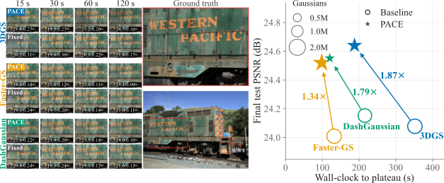
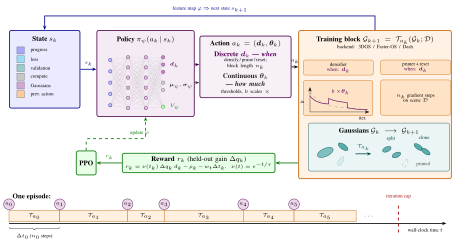
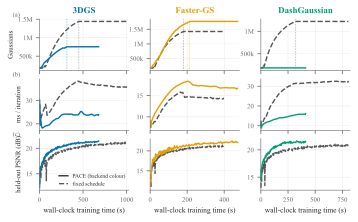
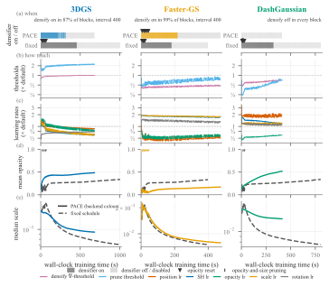
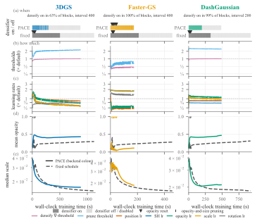
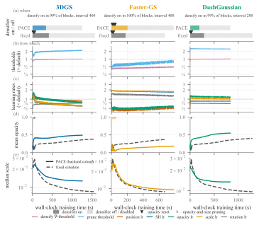

Policy for Adaptive Compute-Efficient 3DGS training
PACE: A Reinforcement-Learning Agent for Accelerated 3D Gaussian Splatting
No more hand-tuning Gaussian Splatting trainers: an RL agent watches the optimisation and sets the schedule itself, when to densify, prune and reset and how fast to learn, reaching every quality target sooner on any trainer backend, with no per-scene or per-trainer tuning.

In short
The problem
3DGS trainers run a fixed, hand-tuned schedule of densification, pruning, opacity resets and learning-rate decay for a preset number of iterations. It spends compute blindly, adding Gaussians whether or not they improve the reconstruction and updating every one of them for the same number of steps, and a recipe tuned for one trainer or scene type does not transfer to another.
The idea
Treat the schedule as a control problem. At the end of every short block of iterations a small policy reads a compact 45-number summary of the optimisation and picks the controls of the next block. It is rewarded for held-out quality reached early, so maximising return means reaching every quality target in the least wall-clock time.
The result
One backend-agnostic formulation accelerates 3DGS, Faster-GS and DashGaussian, learning a different schedule for each: compaction where a Gaussian is expensive, growth where it is cheap. The schedules transfer zero-shot to held-out scenes and to LeGS, a backend with learned per-Gaussian density control on which no policy was trained.
How it works

- Backend-agnostic. The same state, action set, reward and network drive the official 3DGS trainer, Faster-GS and DashGaussian; the policy never edits a Gaussian directly, it only schedules and modulates each backend's own densifier, pruner and optimiser.
- Trained once, deployed fixed. A 150k-parameter MLP trained with PPO on ten real scenes, then run greedily on new scenes with no fine-tuning.
- Interpretable schedules. On 3DGS the policy densifies at the longest interval, prunes harder and never resets opacities, ending with half the Gaussians; on Faster-GS it lowers the densification threshold and grows past the fixed schedule; on DashGaussian it densifies steadily but far more slowly than the fixed schedule, ending with about three times fewer Gaussians.
Key results
same quality at 30k with 2× fewer Gaussians
grows the model further, +1.5 dB at 30k
ends 0.4 dB ahead with 2.9× fewer Gaussians
all three policies, on a backend none was trained on
Geometric-mean time-to-target speed-ups on the held-out Tanks & Temples train scene, single rollout each.

| scene | 3DGS | Faster-GS | DashGaussian | |||||||
|---|---|---|---|---|---|---|---|---|---|---|
| speed-up | PSNR PACE/fixed | Gaussians PACE/fixed | speed-up | PSNR PACE/fixed | Gaussians PACE/fixed | speed-up | PSNR PACE/fixed | Gaussians PACE/fixed | ||
| train | T&T | 1.80× | 21.3/21.3 | 720k/1.45M | 1.37× | 22.7/21.2 | 1.71M/1.41M | 2.11× | 21.5/21.2 | 427k/1.23M |
| barn | T&T | 1.26× | 28.4/28.5 | 680k/1.14M | 1.05× | 29.1/28.5 | 1.22M/1.11M | 1.32× | 28.0/28.5 | 368k/889k |
| caterpillar | T&T | 1.28× | 23.8/24.1 | 855k/1.33M | 1.38× | 24.9/23.6 | 1.67M/1.32M | 1.43× | 23.5/23.9 | 392k/1.06M |
| ignatius | T&T | 2.03× | 23.8/23.3 | 1.70M/2.56M | 1.45× | 23.1/23.3 | 2.77M/2.55M | 1.81× | 24.5/23.3 | 702k/1.92M |
| bicycle | Mip-360 | 1.21× | 24.7/23.2 | 2.19M/2.89M | 1.28× | 22.9/23.2 | 2.43M/2.82M | 1.41× | 24.6/23.6 | 1.21M/2.79M |
| stump | Mip-360 | 1.44× | 25.8/24.1 | 2.16M/2.62M | 1.22× | 24.5/24.2 | 2.10M/2.72M | 1.14× | 25.1/24.3 | 927k/2.65M |
Table 1. Zero-shot acceleration on six held-out scenes. Geometric-mean time-to-target speed-up of PACE over each backend's fixed schedule, and test PSNR (dB) and Gaussian count at the end of the run (PACE/fixed). Bold: PACE at least 0.3 dB ahead or at least 20% smaller. Single seed.
| run on LeGS | Gaussians PACE/LeGS | PSNR @30k PACE/LeGS | 16 dB | 17 dB | 18 dB | 19 dB | 20 dB | gmean |
|---|---|---|---|---|---|---|---|---|
| 3DGS policy | 399k/609k | 20.86/20.83 | 1.54× | 1.84× | 2.10× | 2.41× | 1.52× | 1.86× |
| Faster-GS policy | 720k/642k | 21.35/20.87 | 3.05× | 2.27× | 1.27× | 1.00× | 1.27× | 1.62× |
| DashGaussian policy | 482k/607k | 20.86/20.34 | 3.31× | 2.40× | 1.82× | 1.75× | 1.33× | 2.02× |
Table 2. Zero-shot transfer onto LeGS (held-out train): each trained policy run unchanged on the LeGS backend against LeGS's native per-Gaussian controller; speed-up per PSNR target and geometric mean.
Also in the paper: the advantage persists with only 25–100 training views, and compaction turns into smaller models on disk with lower training memory. The rollouts behind this table can be watched frame by frame below.
Watch it train
The same scene trained twice, PACE on the left and the backend’s fixed schedule on the right, shown at the same wall-clock time throughout. The camera flies the capture’s own trajectory while both models step through the states saved at 0, 5, 15, 30, 60, 120, 300 and 600 seconds and at the end of the run; the panels underneath track Gaussian count, cost per iteration and held-out PSNR, with a marker on each curve. Every scene is held out: no policy was trained on any of them.
Rendered from the Gaussian states saved along the very rollouts the tables above report. Nothing was retrained, and the reconstructions are the reference CUDA rasteriser’s, not a web approximation. 1080p, 36 s each — direct files:
What the policy actually decides
The videos show the effect; these show the cause. Each block, the controller picks when to densify, prune and reset, and by how much to scale the thresholds and the five learning rates. The schedules it arrives at are different for every backend, and none of them looks like the hand-tuned recipe.



© Román Alejandro Jácome Carrascal. Companion page to “PACE: A Reinforcement-Learning Agent for Accelerated 3D Gaussian Splatting”. Figures and videos are built from the manuscript’s own runs.